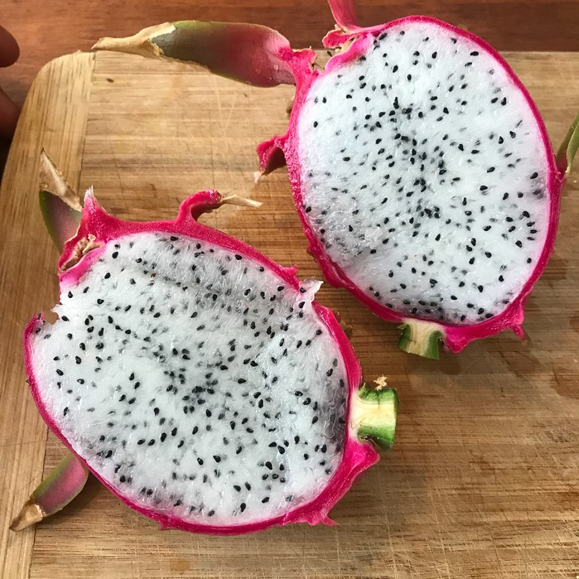
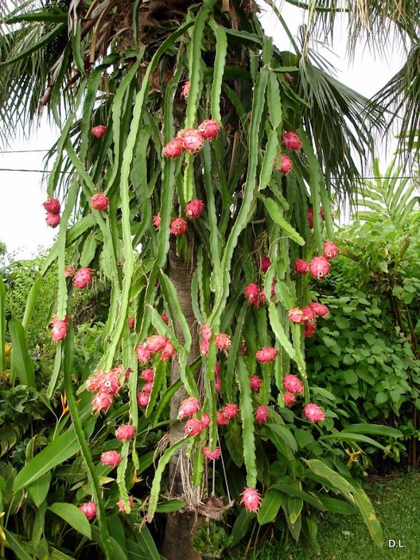

Whenever I ask someone how they feel about dragon fruit, they usually say they don't like them. But maybe they've had the wrong dragon fruit.
The nonbeliever probably tried the most common variety, which has pink skin and white flesh.
I don't like this variety of dragon fruit, either. It has a mild and disappointing taste, like a can of LaCroix.
Luckily, there's a far superior variety that most people don't even know about -- the yellow dragon fruit!
The flesh consistently has this pure sweetness, like the nectar from the honeysuckles I used to pick during elementary school recess. And the seeds! Bulbous, encased in a thin layer of jelly, and an absolute delight to crunch with the molars. Every spoonful of the yellow dragon fruit is a blessing. I'm not finished eating one until I'm scraping the inside of the skin like a prisoner digging an escape tunnel.
When I try to convert someone to yellow dragon fruit, I like to throw in a couple dragon fruit facts to frame myself as an authority figure.
The first fact I share is that the dragon fruit plant is actually a tropical cactus. It's my favorite fact because it surprises people twice: dragon fruit come from a cactus, and tropical cacti exist. I like to imagine it causes them to re-evaluate their mental image of a cactus -- not just a boring desert monolith, but also lush and tentacled and droopy with fruit.
The second fact I tell them is that dragon fruit stems are often beheaded so that a different cactus could be surgically attached on top. This process is called grafting, where a scion (the parasite) is grafted onto a rootstock (the stem).
But why mutilate cacti in the first place? Sometimes, the scion can't photosynthesize. For example, a red moon cactus has no green in it at all because it lacks chlorophyll. So it relies on the dragon fruit rootstock to absorb sunlight and provide it with nutrients. It's a bit tragic, really. While the moon cactus is sitting pretty on top, the poor dragon fruit is slaving away in the dirt like a second class citizen.
I don't usually get to my third fact because their eyes start unfocusing. And I don't want them to forget to try the yellow dragon fruit!
Sometimes, I ask if they have any yellow-dragon-fruit-like recommendations for me. I really live for those "maybe you've had the wrong X" moments.
Like I thought I didn't like wearing sunglasses until I found one that fit my low nose bridge. And I thought I hated Joe's Pizza, but it's actually heavenly at the end of a night out with fellow alcoholics.
Who knows!
Try the yellow dragon fruit -- literally and metaphorically.